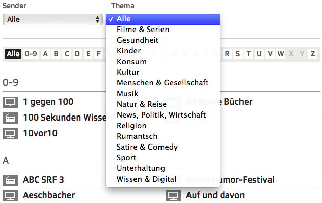
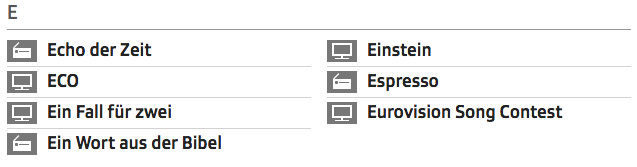

Frontend Performance
Where it matters
Urban Etter
About me
Urban Legends
Urban Myths
Urban Species
Urban Etter
Schweizer Radio und Fernsehen
Web Architect
Part of the Frontend Team
Performance is a
HUGE
topic
Cache invalidation
Vertical scaling
Database clusters
This talk is not about that
Tricks to make your website faster when you're
yahoo.com
['hello', 'world'].join(' ')
instead of
'hello' + ' ' + 'world'
This talk is neither about that
Good practices
Some traps
Some code
Frontend performance for the
craftsmen
Performance matters
... that slowing down the search results page by 100 to 400 milliseconds has a measurable impact on the number of searches per user of -0.2% to -0.6%
by Google
To get that sensation, your requests need to take less than 100ms.
by 37 signals
Performance is a
feature
It takes effort to get it right
It often conflicts with other features
Reduced complexity
Maintainability
Security/h3>
Involves almost every discipline in web development
Loading process
Key to frontend performance
is to understand the page loading process
Lot faster
Lot more files
It took almost 1 second to fetch the initial HTML
It took almost 3.5 seconds to reach DOM ready
It took almost 4.5 seconds to reach "loaded" event
Not all images paralell
Restriction
2 connections per host
For older browsers
Part of the HTTP standard
Modern browsers
6 connections per host
Load JS asynchronously
<head>
<link rel="stylesheet" href="style.css">
<script src="script.js"> </script>
</head>
<body>
My fancy content
</body>
JS loading and parsing
blocks
rendering process
Solution 1
Use async attribute
<head>
<link rel="stylesheet" href="style.css">
<script src="script.js" async></script>
</head>
<body>
My fancy content
</body>
async == not blocking
Solution 2
Preferred
Put JS at the end of the body tag
<head>
<link rel="stylesheet" href="style.css">
</head>
<body>
My fancy content
<script src="script.js"></script>
</body>
Dynamically loading of JS
Defer loading of some scripts until needed
Calendar is not needed until click on calendar icon
Load calendar JS when clicking on the calendar
Load calendar JS when hovering on the calendar
Load calendar JS when all other code is loaded
Result: Added
Complexity
Result: Additional
HTTP request
DON'T
unless you create
client side
one page application
But...
save some bandwith for not used features
Been there, done that
Just not worth it
Deferred != Bad
Deferred image loading
FTW
if
A lot of (big) images on the page
Browser cache
When all JS is in one file
Browser only has to download it once
Free for the rest of the stay
- Concatenate all your JS into one file
- Minify it
It doesn't even matter if you
Need all the JS for this page
Its better to have a bigger file with first request
than to have x additional requests
Not always true
If you have lot of JS which is only used in one part of the site...
Make two files, one with basic JS for every page
one with special content for a part of the page
Performance
vs
Complexity
Versioning
You change your CSS
Browser cached CSS
<script src="script.js"></script>
<script src="script.js?v=12"></script>
<head>
<link rel="stylesheet" href="style.css">
</head>
<body>
My fancy content
{render_include_statement('global')}
</body>
[global]
javascript[]=jquery.js
javascript[]=jquery.cookie.js
...
function render_include(groupName) {
files = getFilesByGroup(groupName);
if (files.newest > lastRun.timestamp) {
result = pack(concatenate(files));
filename = md5(files.newest);
save_file(filename, result);
} else {
filename = lastRun.filename; }
return '<script src="filename">'; }
DOM manipulation
DOM
=
HTML representation
accessible by JS
We use JS to manipulate the DOM
Browser has internal DOM structure
$('#msg').addClass('very_important');- Look up the
divwith id "msg" in the internal structure - Modify the internal structure
- Rerender (at least parts) of the page
If manipulation is done on variable
var content = $('<div>');
content.addClass('very_important');
// more manipulation
$('#msg').append(content);
This saves
- Modify the internal structure
- Rerender (at least parts) of the page
Save DOM Lookups
By using variables
$('#sidebar ul li.warn').css('color', 'red');
var text = $('#sidebar ul li.warn').text();
text = 'Wichtig: ' + text + '!!';
$('#sidebar ul li.warn').text(text);
$('#sidebar ul li.warn').css('font-size', '3em');
var lis = $('#sidebar ul li.important');
lis.css('color', 'red');
var text = lis.text();
text = 'Wichtig: ' + text + '!!';
lis.text(text);
lis.css('font-size', '3em');
Real world example
Problem: Filtering
Problem: Column markup in 2 <ul>s
HTML - Selects
<select id="theme">
<option value="theme:news">
News
</option>
<option value="theme:twitter-relevant">
Twitter relevant
</option>
</select>
HTML - Letters
<div class="letter" data-letter="t">
<ul>
<li data-attr="theme:news">
Tagesschau</li>
</ul><ul>
<li data-attr="theme:twitter-relevant">
Tatort</li>
</ul>
</div>
First aproach
var theme = $('#theme-filter').val();
var station = $('#station-filter').val();
var selector =
'[data-attr*="' + theme + '"]'
+ '[data-attr*="' + station + '"]';
$('li').show();
$('li:not(' + selector + ')').hide();
Result
Second approach
- Clone all
<li>elements (shows) into a repository - Go through all letters, find the shows in the repository which match the letter and the filter
- Append each show to the proper
<ul>in the letter<div>
Second approach - Cloning
$('.li-container')
.clone()
.appendTo($('body'))
.addClass('copy')
.hide();
Second approach - Iterating
$('div.letter').each(function(){
$('.li-container.copy')
.find(selector)
.each(function(index){
if(index > (shows.length / 2)) {
container.find('ul.left')
.append($(this).show());
} else ...
}); });
This was
slow
Third approach
Third approach - Cloning
// on init
$('.li-container').appendTo('#repository');
// #repository is hidden by CSS
var shows = $('#repository').clone();
Third approach - Iterating
$('div.letter').each(function(){
lShows = shows.find(
selector + letterSelector);
lShows.each(function(index){
container.find('ul')
.eq(index < (lShows.length / 2))
.append(this);
});
});
This was
fast
So, what's the
difference
The key is
DOM manipulation
Second approach
clone().appendTo(whatever)
Third approach
var shows = repository.clone()